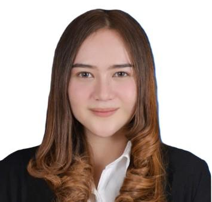

Partner
Ardiansyah
Civil litigation, family law, state administrative disputes, mining and energy law, and industrial relations. Advises on case strategy integrating procedural, regulatory and commercial considerations.
ardiansyah@arlplawfirm.com ↗ARDIANSYAH LIMBONG & PARTNERS
Meet the professionals behind Ardiansyah Limbong & Partners.
PEOPLE / OUR TEAM
Experienced counsel across transactional, regulatory and contentious matters.
Partner
Civil litigation, family law, state administrative disputes, mining and energy law, and industrial relations. Advises on case strategy integrating procedural, regulatory and commercial considerations.
ardiansyah@arlplawfirm.com ↗
Partner & IP Practice Lead
Corporate and commercial matters, intellectual property, litigation and regulatory compliance. Advises on Indonesian market entry and FDI structures, and leads the firm’s trademark prosecution and IP portfolio work.
kamaludin@arlplawfirm.com ↗
Senior Associate
Commercial law, insurance, banking and finance, and employment law. Holds Certified Compliance Professional (CCP) and Certified Governance Professional (CGP) certifications.
gprayoga@arlplawfirm.com ↗
Senior Associate
Corporate and commercial transactions, M&A and capital markets. Advises on due diligence, structuring and OJK compliance; also teaches business law and corporate M&A at Universitas Prasetiya Mulya.
syarlita@arlplawfirm.com ↗
Associate
Commercial disputes, contractual negotiations and corporate transactions, with a focus on aligning legal strategy with clients’ business priorities.
lykaramadani@arlplawfirm.com ↗
Associate
Corporate, mining and dispute resolution work, including company establishment, legal due diligence, transaction documents and court litigation support.
nanda@arlplawfirm.com ↗